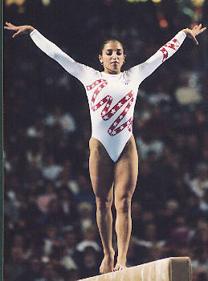

Mohini Bhardwaj (USA)
2000 Olympic Team Silver Medalist

Medal Total
Olympic Games: 1
Silver
World Championships: 1 Bronze
Mohini was born on September 29,
1978 in Philadelphia. For ten years she trained at Queen City Gymnastics
in Cincinnati, and in 1993 she switched to Brown's Gymnastics in Houston. When her coach there,
Alexander Alexandrov, moved to Houston to open and work at another Brown's Gym, she followed him, living by herself at the age of 16. She slacked off in training and missed making both the 1995 worlds and
1996 Olympics teams, but still managed to receive a scholarship to UCLA in 1998. She had a successful collegiate
gymnastics career, winning 2 NCAA team titles and numerous individual
medals. In her last year of NCAA
eligibility, Mohini returned to
international competition and won a team medal at the 2001 World
Championships. After leaving UCLA, she paid for her gymnastics training in
part by delivering pizzas; the actress
Pam Anderson became her sponsor in
2003. In 2004, Mohini realized her dream of competing in the Olympics --
and won a team silver medal. She retired for good in 2005, and currently owns her own gym,
OOA Gymnastics, in Bend, Oregon.
Competition Results
1992
Jr. Buckeye Classic: 16th AA
1993
American Classic: 11th AA
Jr. Buckeye Classic: 8th AA
US Championships: 10th AA
US Olympic Festival: 7th AA
1994
American Classic: 18th AA
Buckeye Classic: 6th AA
US Championships: 35th AA
1995
American Classic: 10th AA
Atlanta Gymnastics Invitational (Pre-Olympics): 8th AA
China Cup: 7th AA
Intl. Mixed Pairs: 3rd Team
Pacific Alliance Championships: 1st AA
US Championships: 13th AA, 4th UB, 6th V
US Olympic Festival: 5th AA, 2nd V, 2nd UB
US World Trials: 13th AA
1996
American Classic: 9th AA
Buckeye Classic: 2nd AA
World Stars: 4th AA2nd UB, 3rd V, 3rd B
US Championships: 12th AA, 2nd B, 4th V, 4th UB, 5th FX
US Classic: 3rd AA
US Olympic Trials: 12th AA
1997
American Cup: 8th AA (prelims)
US Championships: 3rd AA
World Championships: 6th Team, 5th V
1998
NCAA Championships: 5th Team, 4th UB, 7th V
1999
NCAA Championships: 5th Team, 11th AA, 7th UB
University Games Trials: 2nd AA
University Games: 14th AA (prelims)
2000
NCAA Championships: 1st Team, 2nd AA, 1st UB, 2nd B, 5th V
2001
NCAA Championships: 1st Team, 3rd AA, 1st FX, 5th UB
PAGU Championships: 2nd AA
Reese's International: 8th AA
US Championships: 3rd AA
US Classic: 28th AA
World Championships: 3rd Team, 18th AA, 7th V
2002
US Championships: 20th AA
US Classic: 8th AA
2004
American Classic: 8th AA
Olympic Games: 2nd Team, 7th FX
US Championships: 12th AA
US Olympic Trials: 6th AA
This page was created on August
14, 2005 and was last updated on December 12, 2020.
© Gymn Forum